東京
一番町まつりかクリニック
| 住所 | 〒102-0082 東京都千代田区一番町4-65 一番町大石ビル1階101 |
|---|---|
| アクセス | 東京メトロ半蔵門線 半蔵門駅 5番出口 徒歩3分 |
| 営業時間 | 完全予約制（詳細はクリニックへご確認ください） |
| 駐車場 | なし |
| Web | 公式サイト |
料金表
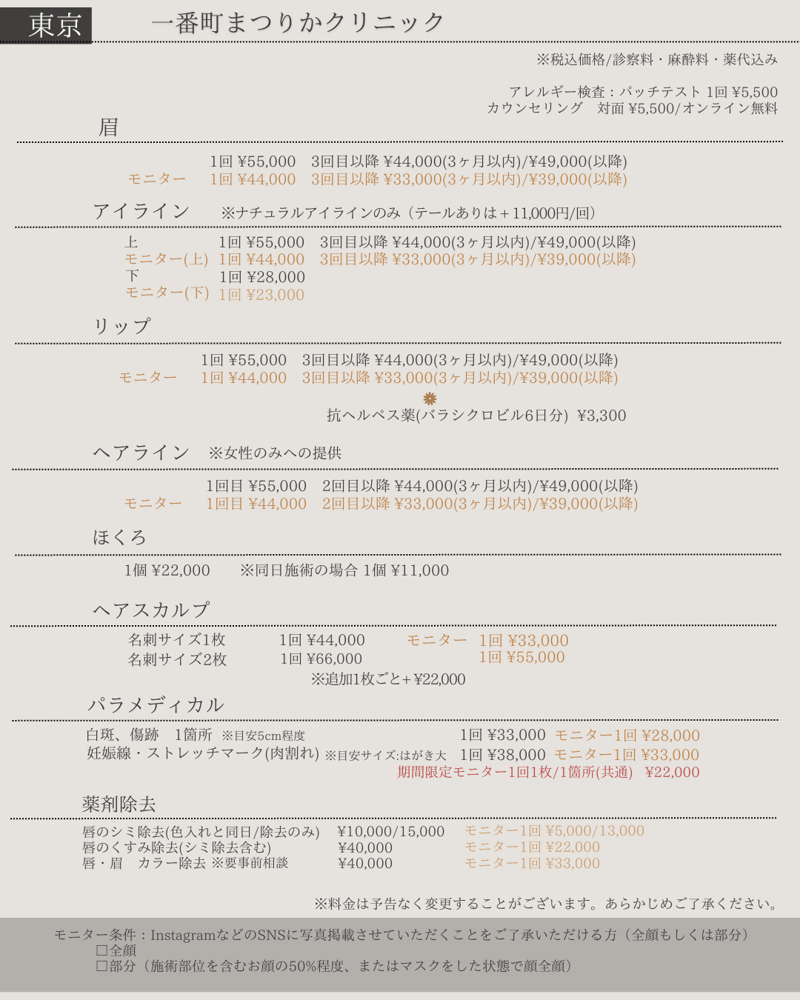
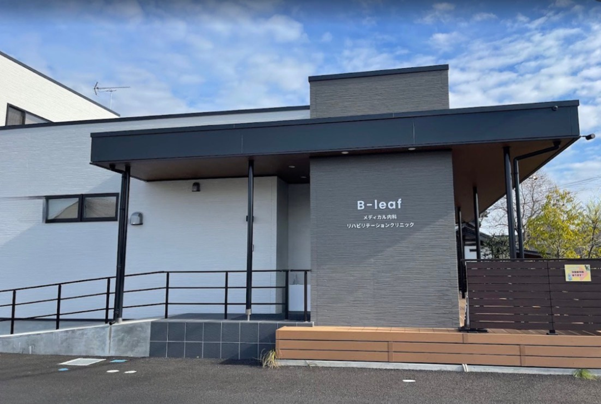
茨城・つくば
B-leafメディカル内科小児科クリニック
| 住所 | 〒305-0034 茨城県つくば市小野崎446-1 |
|---|---|
| アクセス | つくば駅より関東鉄道バス「小野崎南」バス停 徒歩約5分 |
| 電話 | 029-869-8317 |
| 営業時間 | 午前 9:00〜12:30 / 午後 14:30〜18:00 ※第1水曜は16:30まで / 受付は診察終了30分前まで |
| 定休日 | 木曜・日曜・祝日（第4水曜は午後休診） |
| 駐車場 | あり |
| Web | 公式サイト |
料金表
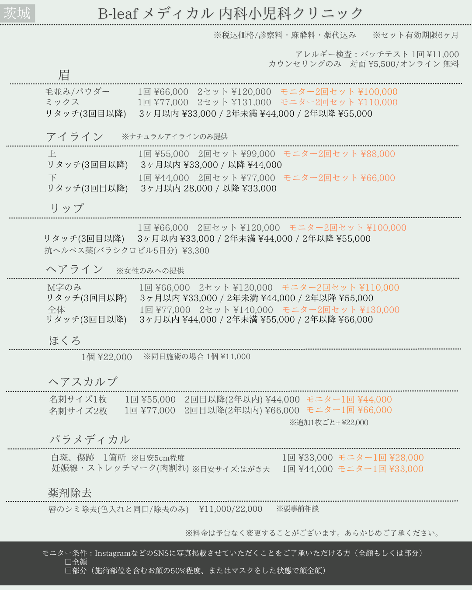
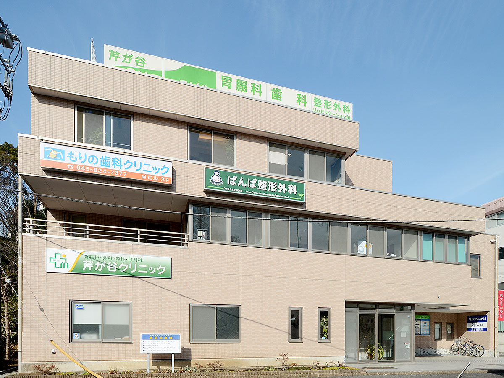
料金表
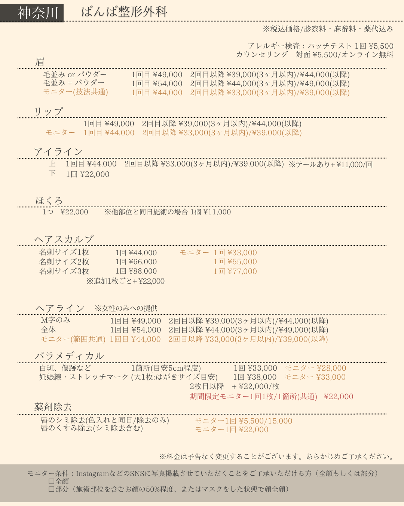

群馬・太田
シンシアガーデンクリニック 太田院
| 住所 | 〒373-0816 群馬県太田市東矢島町284 |
|---|---|
| アクセス | 太田駅より車で15分・太田桐生ICより車で約30分 |
| 営業時間 | 火〜日 10:00〜19:00 |
| 定休日 | 月曜日 |
| 駐車場 | あり |
| Web | 公式サイト |
料金表
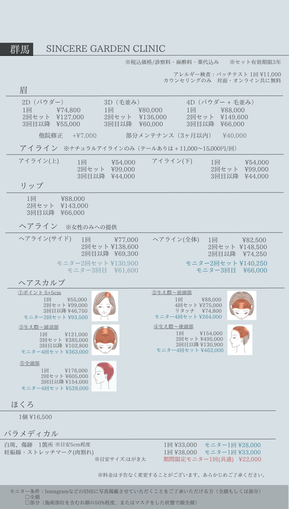
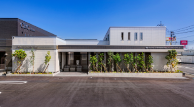
群馬・高崎
シンシアガーデンクリニック 高崎院
| 住所 | 〒370-0046 群馬県高崎市江木町1718-4 |
|---|---|
| アクセス | 高崎環状線沿い・駐車場16台完備 |
| 営業時間 | 火〜日 10:00〜19:00 |
| 定休日 | 月曜日 |
| 駐車場 | あり（16台） |
| Web | 公式サイト |
料金表

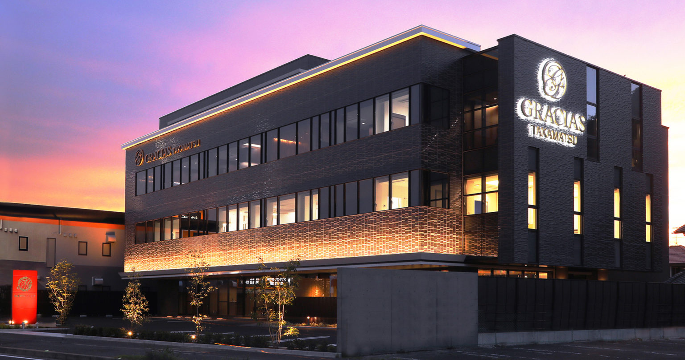
香川
真弓愛メディカルクリニック
| 住所 | 〒761-8054 香川県高松市東ハゼ町12-7 GRACIAS TAKAMATSU 2階・3階 |
|---|---|
| アクセス | バス停「東室新町」徒歩約3分 琴平線 三条駅 徒歩約15分 高松南バイパス沿い・ゆめタウン高松東 |
| 営業時間 | 月・火・金 9:00〜19:00 水 10:00〜19:00 木 9:00〜13:00 土 9:00〜15:00 |
| 定休日 | 日曜・祝日 |
| 駐車場 | あり（第1駐車場14台・第2駐車場4台） |
| Web | 公式サイト |
料金表
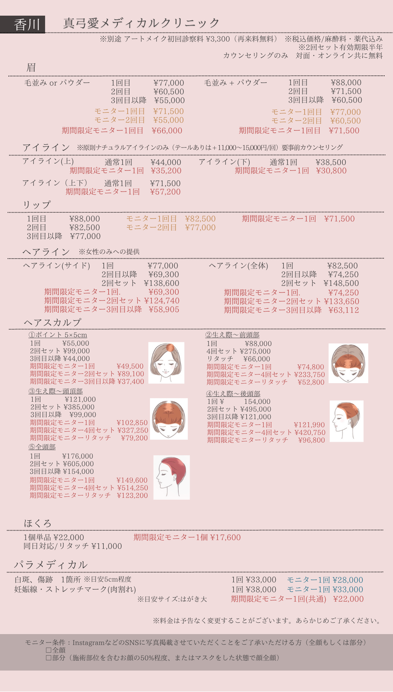
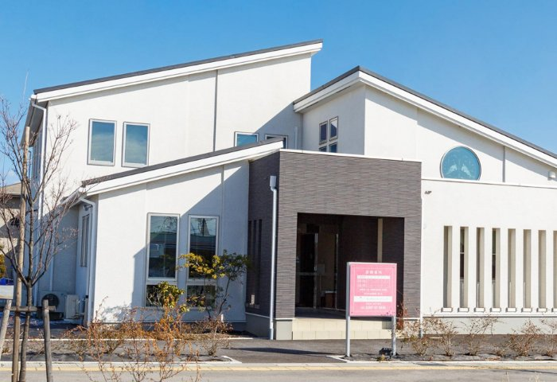
長野
佐久平エンゼルクリニック
| 住所 | 〒385-0021 長野県佐久市長土呂1210-1 |
|---|---|
| アクセス | 佐久平駅より車で約5分 |
| 営業時間 | 月〜火 9:00〜18:30 / 水 9:00〜18:30 / 木〜日 9:30〜18:30 |
| 駐車場 | あり |
| Web | 公式サイト |
料金表
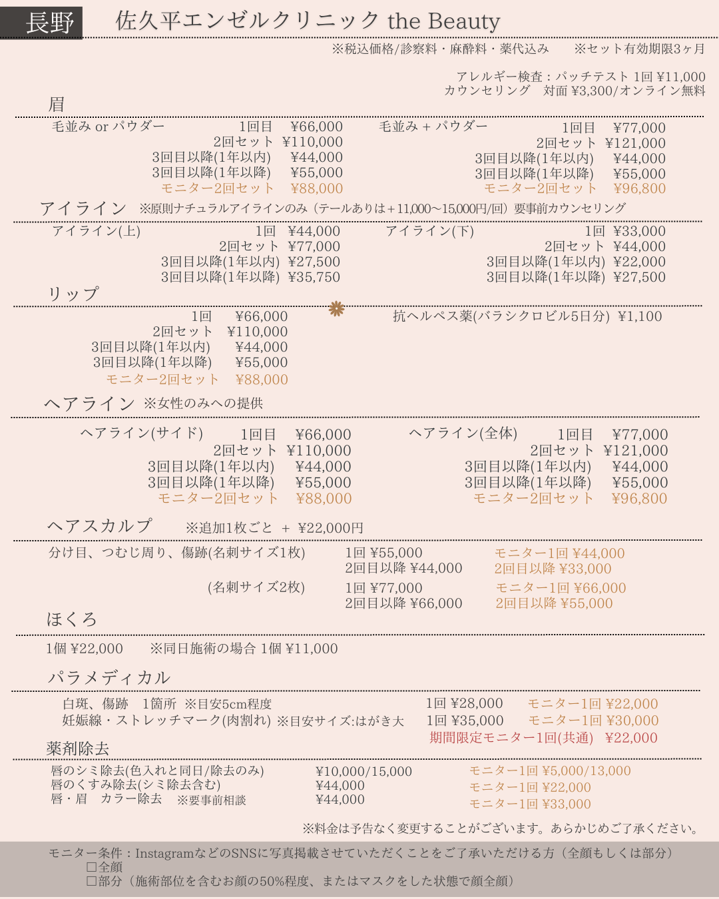
福岡
松田知子皮膚科医院
| 住所 | 〒819-0168 福岡県福岡市西区今宿1-5-27 |
|---|---|
| アクセス | 今宿駅より徒歩5分・駐車場完備 |
| 営業時間 | 月〜水・金 10:00〜13:00 / 15:00〜18:00 木・土 10:00〜14:00 |
| 定休日 | 日曜・祝日 |
| 駐車場 | あり |
| Web | 公式サイト |
料金表
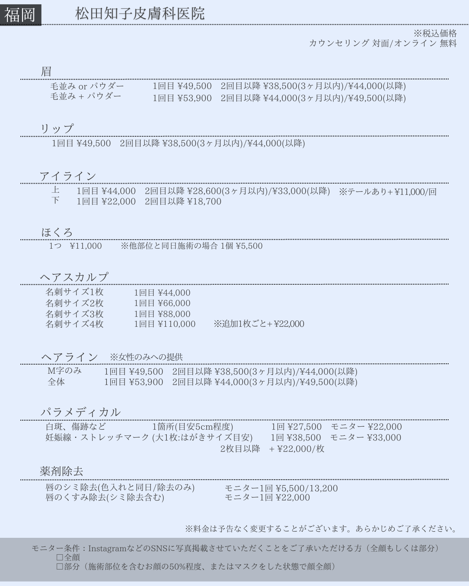